Tap an underlined word for Korean context meaning and an English definition.
Chapter 18
[A]Gibby to Fox Run after a few hours because she had to go to work. She so they could do something fun, like go to the movies, but Michael . “Remember what happened to my mom,” he said. She called out sick and .
[B]He didn’t need to who had fired her.
[C]In Michael’s apartment, the Rosarios’ with a .
[D]Ridge, by the “,” asked if he could .
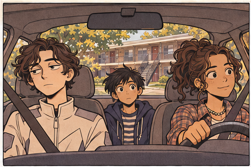
[E]“Sure, go ahead,” Michael said as he on the . He and Ridge both had milkshakes from Johnny Rockets, . The milkshake had what was left of Michael’s .
[F]He’d about the sumbook in Ridge’s pocket.
[G]Almost.
[H]Mr. Mosley’s voice came from the .
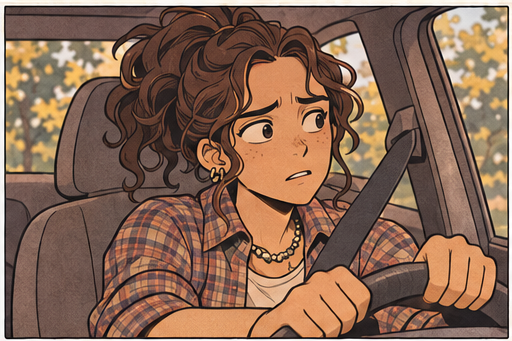
[I]“Hey, Michael,” Mosley said. “I for lunch, but you weren’t home. . Hope you’re off doing something fun.”
[J]Michael . It was just after one thirty.
[K]Ridge set down his milkshake, picked up the phone, and studied it , his face . “Can we call someone? Can we please call someone?”
[L]“We can call Mr. Mosley back, if you want.”
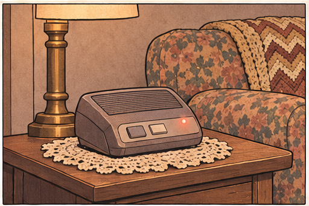
[M]Michael the phone, but Ridge brought it to his .
[N]“Can I ?” he asked.
[O]“Sure.” Michael gave him the number. Ridge pushed each one on the and as Mr. Mosley’s phone rang.
[P]“It’s ringing!” Ridge said excitedly.
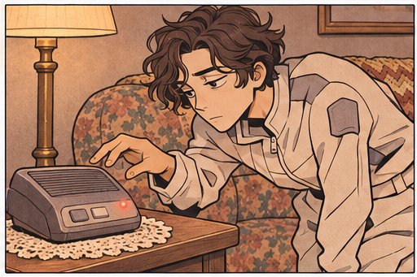
[Q]“That’s what happens.” Michael for the phone. When Mr. Mosley answered, he said, “Hey, Mr. Mosley. Sorry I wasn’t here for lunch. We went to the mall.”
[R]“Get anything good?”
[S]“I bought a book.”
[T]“Does anyone get murdered in it?”
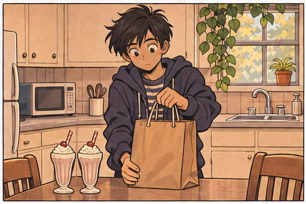
[U]“. Are you ?”
[V]“A little bit, I suppose. Sometimes all you need is a ,” Mr. Mosley said. “I’ll be around tomorrow with some sandwiches, all right?”
[W]“All right,” Michael said.
[X] Michael returned the phone to its , Ridge said, “I always wondered what it was like to talk on a .”
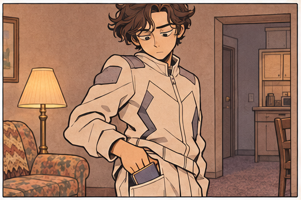
[Y]“How do phones work where you’re from?”
[Z]Ridge . “I’m not sure how to explain. It’s .”
[AA]They to the couch with their milkshakes. Michael turned on the television. The Ricki Lake Show .
[AB]“Some people say that there will be a of when Y2K hits,” Michael said . “No , no clean water, no . Food, gas, and . The will . No one will have jobs. There will be .”
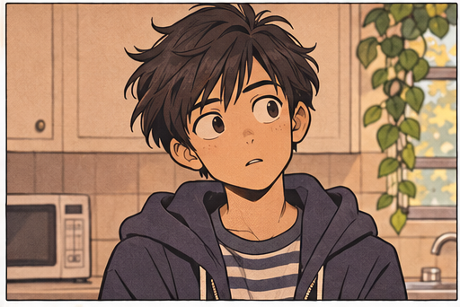
[AC]Ridge of his milkshake. He around. “Is this ?”
[AD]“Yes.”
[AE]“ . .”
[AF]Michael at Ricki Lake as she interviewed a couple about the boyfriend’s . “How come you can tell us about plastic and and earthquakes, but you can’t tell me about Y2K?”
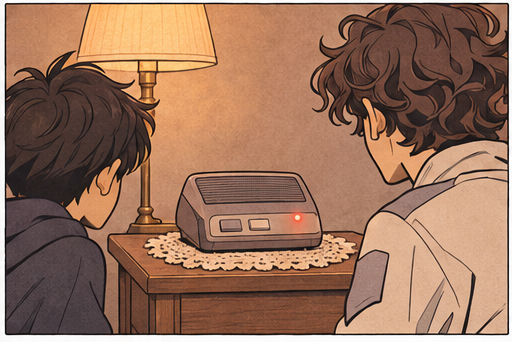
[AG]“Because there’s nothing you can really do about any of those things. You’re .”
[AH]“Well, if I’m just one kid, then I can’t do anything about Y2K either.”
[AI]“That’s not true. There’s you could do. I tell you, ‘Michael, everything you’re is going to happen, .’ You could and tell everyone in this , which could start an , which could the riots you just told me about. Or you could a for and a and send you to the . , if I say, ‘Michael, nothing is going to happen. No disaster will ,’ then you could tell all your friends that they , and you could and tell everyone it’s all a big . No one worries, everyone , and a disaster happens .”
[AJ]“But I’m just one kid. . I don’t have any friends,” Michael said.
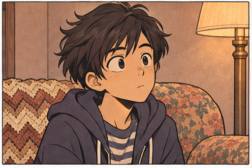
[AK]“What about those kids with the ?”
[AL]“I thought you said there was some theory, the Saeed Theory or whatever, which that nothing you do here will change anything, so it was okay to tell us stuff.”
[AM]“It’s a lot more than that,” Ridge said. “Are they ?”
[AN]“Who?”
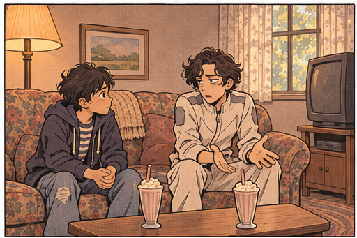
[AO]“The kids with the .”
[AP]“The Prince brothers? No.”
[AQ]“Why not?”
[AR]“Because they’re just not, okay? Let’s talking about Y2K. You once said something about the , and how whatever’s happening now . Right?”
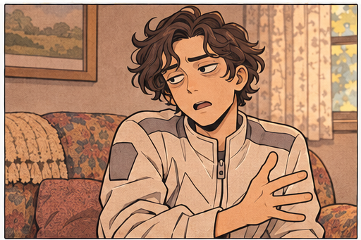
[AS]“,” Ridge said.
[AT]“So if you tell me about Y2K, it’ll be fine. Because if it wasn’t fine, your would be . Right?”
[AU]Ridge .
[AV]“Is that a yes?” Michael said.
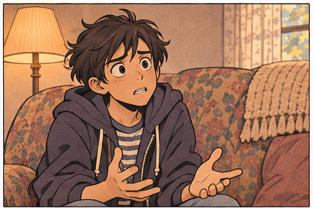
[AW]“No. Because there’s also the that I never tell you about Y2K, which is my is ,” Ridge said. He on his and of his milkshake. “You might as well , Michael. I’m never going to tell you what happens. Not when it’s only . It would be of me.”
[AX]“Yes, but—”
[AY]“So, what’s the problem with the Princes? What, are they or something?”
[AZ]“Wait. What?”
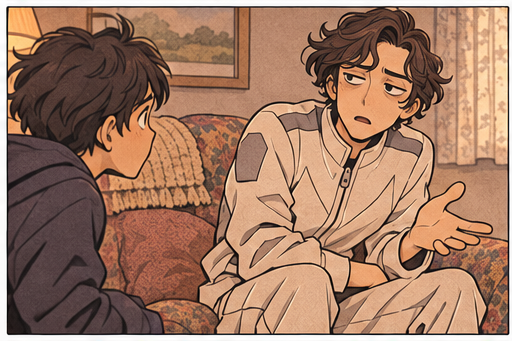
[BA]“The brothers.”
[BB]“That’s not what we’re talking about.”
[BC]“It is now.”
[BD]Michael and stared at the television. A for the new iMac was playing. Jeff Goldblum. “Seems like everybody these days is on the internet, right?” he was saying.
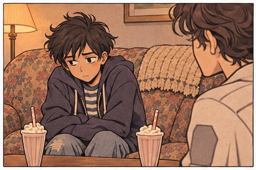
[BE]“They’re ,” said Michael. “But . . .”
[BF]“But what?”
[BG]“Well. They’re brothers.”
[BH]“So?”
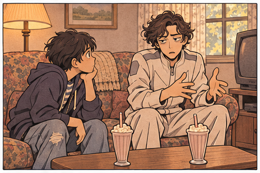
[BI]So, they’re a . ?
[BJ]The clicked through his head. Him, by a mile. Him, . Him, getting and . Them: “Why did we invite this kid?”
[BK]“You have a ,” Ridge said. “That’s what my mom calls it when people and —a . Because it can feel . Some people get for it where I’m from.”
[BL]“What do you mean, upgrades?”
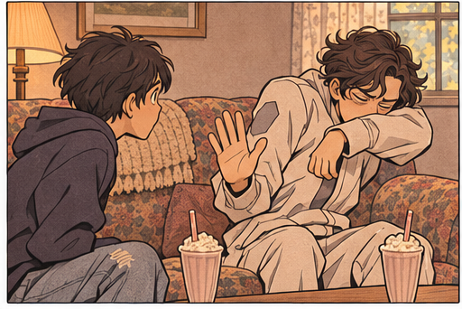
[BM]“You can get for . My mom says it’s not really an upgrade, though, because upgrade that all our are , and she says that’s not true. The Global Science Council . But the AI companies—the ones who —think the GSC is wrong. They say it’s another . There’s a lot of .” He his milkshake and , like he was getting a just thinking about it. “My mom loves debate, though. She even one.”
[BN]“I don’t think I’d want to get an upgrade, or whatever you call it,” Michael said. He sitting in a , . Some people said that’s where the internet would lead—straight into a where everyone would be . “? Have you done it?”
[BO]“No.”
[BP]Michael having all his imperfections . No more . No more . Always knowing just what to say and when to say it.
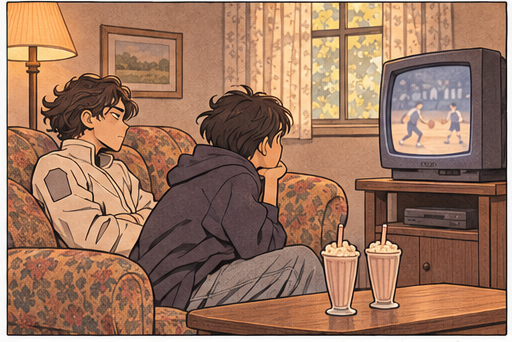
[BQ]Maybe an upgrade wouldn’t be so bad .
[BR]“Do people in the future?”
[BS]“. There are some things that are , but we have this thing called the HUCK. You put a on, and you’re better .” Ridge shrugged, like it was .
[BT]“What does HUCK stand for?”
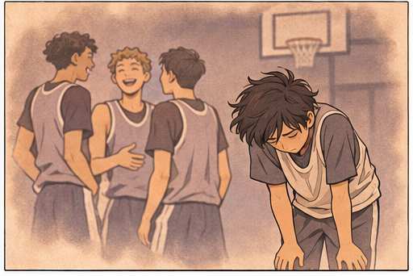
[BU]“Health Ukash-Chekole Kit.”
[BV]“What is ‘Ukash-Chekole’?”
[BW]“It’s the two women who it.”
[BX]Michael had more questions—What does it when you put the on? How do people die if they never get sick? Are there patches for too? If I lived in the future, could I get an upgrade to make myself as big as Beejee? —but a for Super Smash Mario Brothers and .
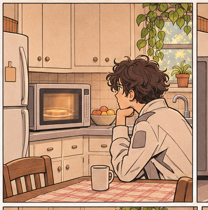
[BY]“Hey, it’s a show about that toy!” he said, the television. “Bowser!”
[BZ]“It’s not a show. It’s a ,” Michael said.
[CA]“Do you have one of those Nintendo 64s?”
[CB]“No. We .”
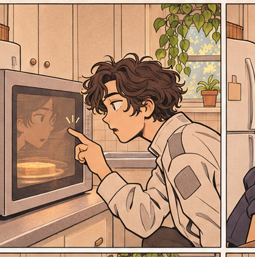
[CC]“Oh. .”
[CD]Ricki Lake came back on.
[CE]“What do you mean, your mom named you after a debate?” Michael asked.
[CF]Ridge . “There’s this in the of the GSC museum, and it has written on it. Ridge. It’s and everything. All they know is that the paper the founder, but they what it means. Scientists have been about it . Some people think it the on the Delaware . Some people think it has something to do with . Others think it . My mom says she has no idea, she just likes the . All I know is, it’s really being , especially when you’re all the time.”
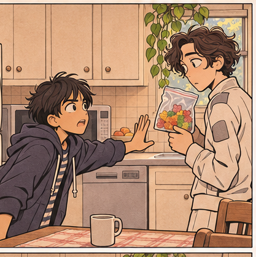
[CG]“I was , except he . That’s why . . . hey, are you all right?”
[CH]Ridge was with his fingers.
[CI]“I think this milkshake is my throat,” he said.
[CJ]“Maybe it’s ,” Michael said.
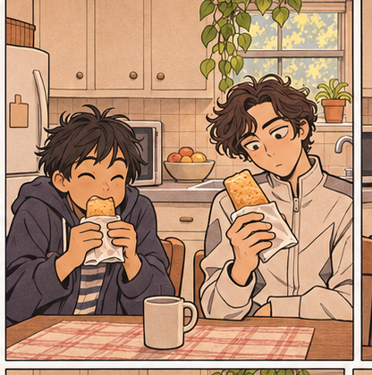
[CK]“Yeah,” Ridge said. “Maybe.”
[CL]Then he .
[CM]The Ridge Document Mystery refers to a among the founder’s . (See Founder.) The paper would have been had it not been , . The of the document once had , but the image has and is , by modern science.
[CN]The has never been able to to the word “ridge.” There are , all of which have . Some believe “ridge” may refer to , which are along the Delmarva , which is 170 miles long and includes the of Delaware and parts of the Eastern Shore of Maryland and Virginia. Others believe it could refer to , the ridges on the . Still others believe it could relate to an .
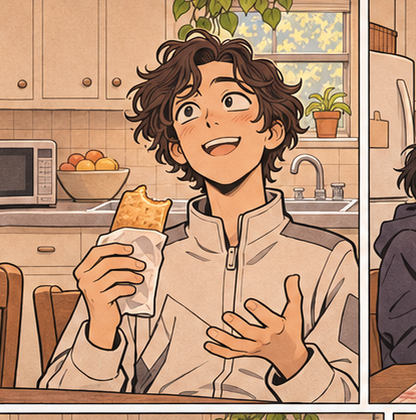
[CO]From The Encyclopedia Britannica-Barlowe (2199)
Chapter 19
[A]Of all the items in the Rosario , nothing Ridge more than the . Michael Hot Pockets for dinner, and Ridge . When the Hot Pockets were done—ham and cheese, Michael’s favorite—Ridge was in eating.
[B]“Beejee doesn’t have one of these in his apartment,” Ridge said, . “How does it work? The sumbook doesn’t microwaves.”
[C]“I don’t know how it works. It just . . . works,” Michael .
[D]“Let’s more things,” Ridge said. He opened a over the —the one Michael —and a bag of . “What about this?”
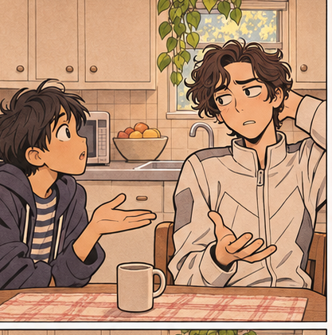
[E]“Those my mom. They’re her favorites,” Michael said. He to add to the . “, you can’t put in the .”
[F]“Why?”
[G]“I don’t know. You just don’t. They’d probably .”
[H]Ridge the aside and a of Kool-Aid. “What about this?”
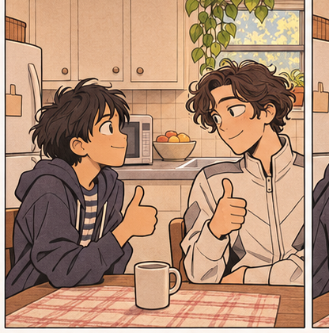
[I]“Let’s not put anything else in the . I don’t want to . Let’s just eat what we have.” Michael the Hot Pockets on the counter, then looked around as if seeing his home . He’d never before, Gibby; it was strange to see it through . “Sorry we don’t have a table. Our apartment’s kinda small. We can eat on the couch, if you want, or you can sit on Mr. Mosley’s .”
[J]But Ridge wasn’t . He lifted and examined the Hot Pocket. “What’s in this?”
[K]“Ham and cheese.” Michael of his. He was .
[L]Ridge bit a small corner and .
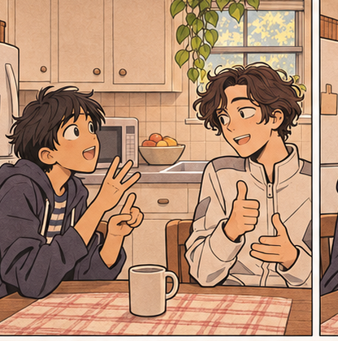
[M]“This is ,” he said, taking another bite.
[N]“I know,” Michael replied. , he said, “How do you food in the future?”
[O]Ridge a from the side of his mouth. “It’s .”
[P]“That’s what you said about the phones.”
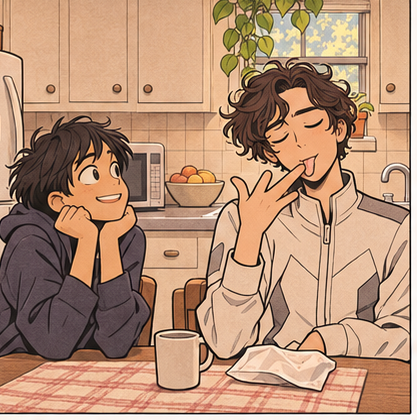
[Q]“I know.” Ridge shrugged. “But some things are hard to explain because two or three have to happen before my explanation would . It would be like explaining the internet to someone who doesn’t know what is.”
[R]“How about ?”
[S]“Hmm. Maybe. they’re . And nothing about the . No Y2K.”
[T]“Okay.” Now that Michael had the to , his . , his first thought was Tuxedo and Clipper. “Are there cats in the future? Little cats, like the one who sat with you on the bench.”
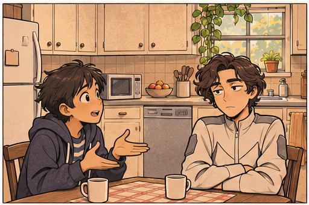
[U]“Yes.”
[V]“What about dogs?”
[W]“.”
[X]“?”
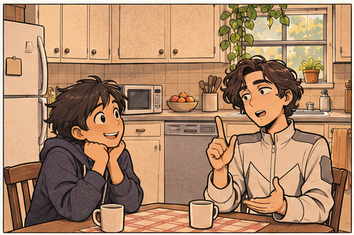
[Y]“No.”
[Z]“Schools?”
[AA]“.”
[AB]“Cars?”
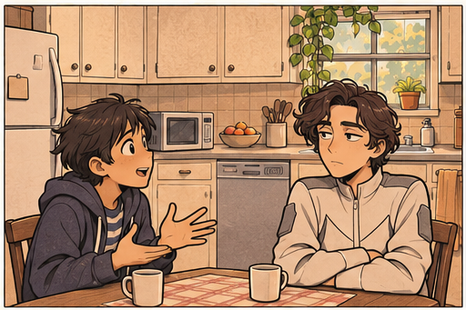
[AC]“Not like Eloise.”
[AD]“Flying cars?”
[AE]“.”
[AF]“?”
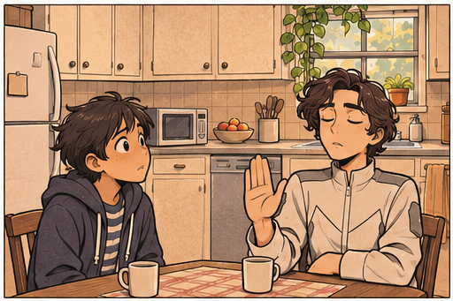
[AG]“Yes. But no one dies from it anymore, because of the HUCK.”
[AH]“Robots?”
[AI]“Yes, but we don’t call them that.”
[AJ]“What do you call them?”
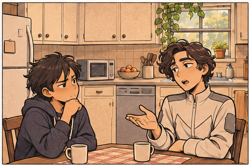
[AK]“.” Ridge the last of the cheese from his fingers.
[AL]“?”
[AM]“What’s a jet pack?”
[AN]“Like, a that you put on and then somewhere.”
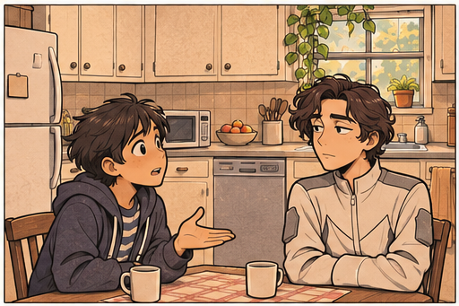
[AO]“No.”
[AP]Michael and slipped them into the dishwasher. Then he walked into the living room and said, “Television? Movies?”
[AQ]“Yes and yes.” Ridge .
[AR]“?”
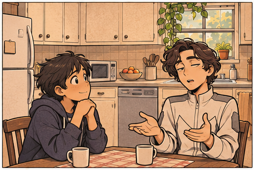
[AS]“Yes.”
[AT]Michael his sneakers by the door. “Jordans?”
[AU]Ridge laughed. “No.”
[AV]“Basketball?”
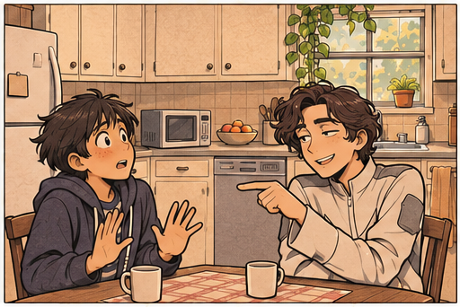
[AW]“Yes. But it’s .”
[AX]“How long do people live?”
[AY]“That’s not a yes or no question. But they live than people do today.”
[AZ]Michael , thinking. “Are people happy in the future?”
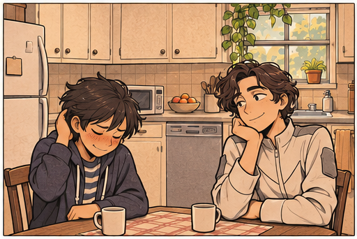
[BA]“I guess it who you ask.”
[BB]“What do people do ?”
[BC]“ who they are.” Ridge paused. A . “But sometimes——people when they get their numbers.”
[BD]“What does that mean?”
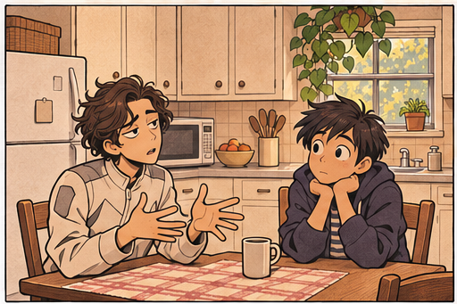
[BE]“Well. You know how people call each other on the phone here? Everyone has and everything?”
[BF]“Yeah.”
[BG]“It’s in the future too. I mean, our technology is better. But the is still the same. When I have a girl’s number, I . How else am I supposed to ?”
[BH]Michael . “What are you ?”
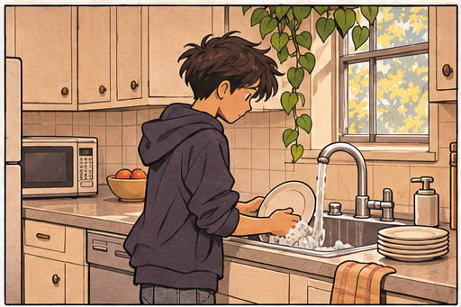
[BI]“I’m just saying. , there’s this girl , Aderlaine. I asked her if she wanted to go with me because she’s really into and all that. I knew there was a , but I figured, I have . One, I never ask her, and I’m not to take her . Or two, I ask, and then I might go . Option two is definitely the , don’t you think?”
[BJ]Before Michael could answer, Ridge , “There’s this named Mel Conklin. My mom is always her. She says the goes like this: For every you can , you should . Scientists have to everything that can with their —it’s part of what a good scientist does. But a never forgets the , .”
[BK]“So you took the girl stargazing?”
[BL]“,” Ridge said. “And , we’re talking about you.”
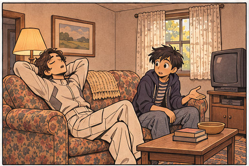
[BM]“Me?”
[BN]“Yeah. I think you should call that girl. Paige.”
[BO]“.”
[BP]“Way.”
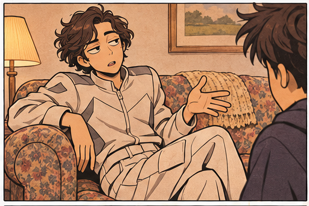
[BQ]“Why?”
[BR]“Why? . To , to ask her if she wants to go do something, like go to the mall.”
[BS]“I don’t even know if I like her,” Michael said, but even as the words , he thought about her smile and how it . “What if I call and it’s and ? I mean, I don’t even know her.”
[BT]“That’s . You’ll never if you . You’ve got to . The .”
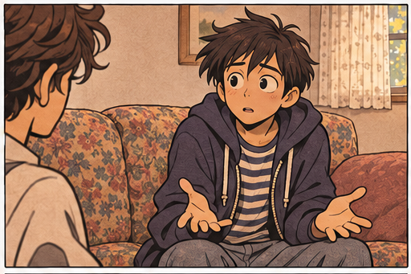
[BU]“The ,” Michael .
[BV]Ridge . “. It’s the best place to be.”
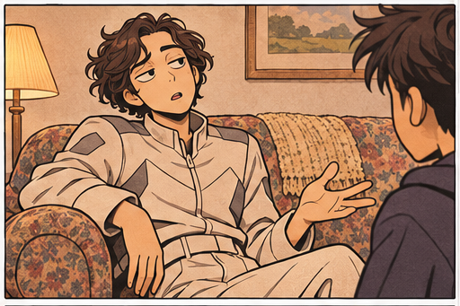
Chapter 20
[A]Michael heard the open at , Ridge had gone back to Beejee's.
[B]Michael was . The in the . "Mom, is that you?" he . It was a — it was her.
[C]She opened his door and . She hadn't yet.
[D]"How was work?" Michael asked.
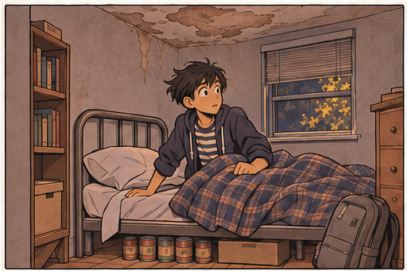
[E]She smiled. "I ."
[F]She .
[G]He thought about his Jordans by the . He thought about how she'd because he'd . He thought about .
[H]"What did you do today?" she asked.
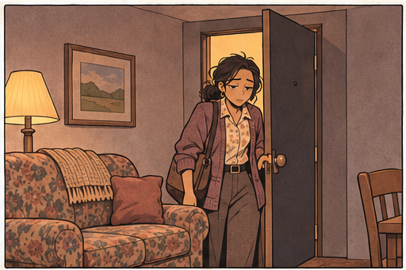
[I]"Went to the mall," he said.
[J]"Did you buy anything?"
[K]"I bought a book."
[L]She . "A book?"
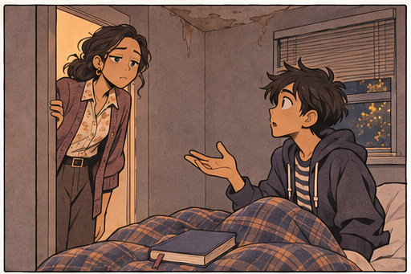
[M]"Yes. It's Our Angry Earth." The book was next to his , . "I wish you didn't have to work ."
[N]"," she said, . "If I wasn't at work, I'd be here, ."
[O]"That ."
[P]"You're right. It wouldn't." She stared at him . Then she . ", my ."
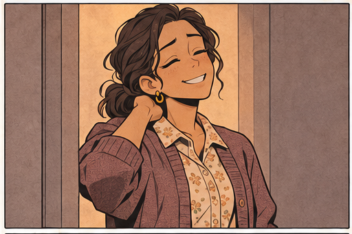
[Q]After she closed the door, Michael and stared at the on his .
[R]"Paige Kaminski," he said.
[S]He tried to think of a word that her , but .
[T]Maybe she thought you were too, Michael thought.
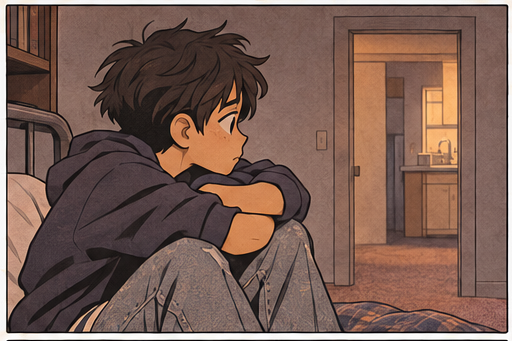
[U]But that wasn't . No girl had ever liked Michael. He was too , too , too . He was a kid who in front of his and then asked to go to the . He was a kid who liked helping his teachers because they --tired and and --but that was a bad thing. It made him a . A . Sometimes other kids when he Mrs. Schnurr's or for Mrs. Fajardo.
[V]What girl would like a boy like him?
[W]What would he say if he called her, ?
[X]What if it was and and he just sat there ?
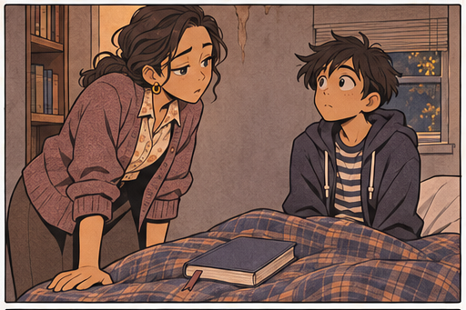
[Y]No, .
[Z]He closed his eyes and to go to sleep.
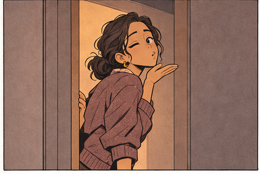
Chapter 22
[A]Ridge was in his , but he . He was , Beejee’s living room and . He looked too.
[B]“I should have gone right back I got here, but I wanted to see something before I left,” he said. “I’m going to be in a . Who knows what I’m . . .”
[C]“It’ll be okay,” Gibby said. She was on the . “What’s the ?”
[D]“ in front of the GSC. of my mother’s . . The end of spatial teleportation science . , the Saeed Theory of time travel could be wrong, and I may have while I was here, and when I get home, I’ll an in which nothing from my .”
[E]Gibby paused. “Okay, that sounds pretty bad. But I’m sure is your safety. They’ve probably been , and when you get home, they’ll all .”
[F]“I ,” Ridge said. “They already think I’m .”
[G]“I’m sure that’s not true,” Gibby said. “Why would they think something like that?”
[H]“Because I do things like travel back in time before the STM has been for ,” Ridge said. “Oh god. My mom is going to kill me. She’s probably a device right now so she can for the .”
[I]Gibby and put her hands on Ridge’s . He .
[J]“It’ll be okay,” she said, speaking slowly, like a mother . “You just need to . Right, Michael?”
[K]Michael . As someone with a , he knew one thing : telling someone to .
[L]“Remember the Conklin Principle,” Michael said . He stood next to Gibby. “.”
[M]“One good outcome,” Ridge , . “Right.”
[N]“The what principle?” Gibby said.
[O]“Okay, okay, the Conklin Principle,” Ridge , pacing again. He . “I get home. Everyone’s . . The GSC sees that Saeed was correct. .”
[P]“Exactly,” Michael said. “It’s , right?”
[Q]Ridge stopped where he was, , and took the EGG out of his pocket. “Yes. It’s .”
[R]“No ,” Michael said, now that he was . “Just the . First state.”
[S]“First state,” Ridge said. He placed the EGG in the .
[T]—just a moment—Michael considered and the sumbook, but the thought and a came . , he wouldn’t have to think about it anymore.
[U]“You ready?” Gibby asked.
[V]Ridge . When he , he was .
[W]“Yes,” he said. “1999 is making me sick.”
[X]Michael and Gibby . Maybe it was Michael’s , but it felt like the air with , like they were both jumpy and scared, even though they were just standing there, . Michael hadn’t realized how fast his until that moment. , , . He almost didn’t notice the .
[Y]Almost.
[Z]“Thanks for everything you’ve done. Both of you,” Ridge said. “Going to the Christiana Mall was the most of my life.” He , . “Don’t when I . Okay?”
[AA]“Okay,” Gibby and Michael said .
[AB], , .
[AC]Ridge on the EGG.
[AD]Michael . His eyes tried to make sense of what was happening, because it didn’t seem logical, but it was happening—Ridge was . through the air. The hair on Michael’s arms stood up. A floated around them.
[AE]Ridge was disappearing.
[AF]Actually disappearing.
[AG]“I wish I had a ,” Gibby , her eyes . “I’m not going to believe this later.”
[AH]But all Michael could think was: I . I should have about Y2K. I should have—
[AI]“Wait,” Gibby said. “What’s happening?”
[AJ]Ridge was , like a . , he stood in front of them , with his still on the EGG.
[AK]He .
[AL]He . Looked at Michael. Looked at Gibby. And, , looked at the EGG. He stared at it for , not saying a word. Then he , .
[AM]“Why am I ?” he said.
[AN]
[AO]08/20/2199
[AP]SPATIAL TELEPORTATION ; UNIVERSITY OF DELAWARE, RED KNOT CAMPUS; LABORATORY A2122
[AQ]SABIO, MARIA (F/52YO/162CM/71KG/BRN/BRN/IQ163), PHD, DST,
[AR]SABIO, IAN (M/18YO/182CM/85KG/BRN/BRN/IQ157),
[AS]SABIO, SHALE (M/17YO/181CM/89KG/BLU/BRN/IQ145),
[AT]SABIO, BEX (NB/14YO/148CM/45KG/BLU/BRN/IQ158),
[AU]SABIO, BEX: , Mom! !
[AV]SABIO, MARIA: What? What happened?
[AW]SABIO, BEX: !
[AX]SABIO, MARIA: ? ?
[AY]SABIO, BEX: It means—
[AZ]SABIO, MARIA: Holocom, page Ian Sabio and Shale Sabio to !
[BA]HOLOCOM: Ian Sabio, please laboratory A2122 .
[BB]HOLOCOM: Shale Sabio, please laboratory A2122 .
[BC]SABIO, BEX: It means he tried the EGG! !
[BD]SABIO, MARIA: Thank god. Thank god.
[BE]SABIO, BEX: He’s probably been trying it and it wouldn’t . That means we’re on the code.
[BF]HOLOCOM: Subject Ian Sabio will in .
[BG]HOLOCOM: Subject Shale Sabio will in .
[BH]SABIO, MARIA: .
[BI]SABIO, BEX: The said the were near the Fox Run , right?
[BJ]SABIO, BEX: I’m sure he’s safe. It’s not like he in a or something.
[BK]SABIO, MARIA: What if he was for his ? He spent on it and—
[BL]SABIO, BEX: Mom. The won’t even work over there. The NTIs will see some with , and that’s it. You’ve been up for . You’re not . Maybe you should get a , or at least sleep . We won’t leave the , I promise.
[BM]//ENTER SABIO, SHALE
[BN]//ENTER SABIO, IAN
[BO]SABIO, IAN: Did you ? Is it working?
[BP]SABIO, BEX: Not yet, but we’re . We got a blink for the first time since the STM .
[BQ]SABIO, SHALE: A blink? What does that mean?
[BR]SABIO, BEX: It means the EGG is trying to the STM. It just can’t get through all the way.
[BS]SABIO, SHALE: How do we know it’s him?
[BT]SABIO, BEX: The , remember? The EGG will only work with his .
[BU]SABIO, IAN: Thank god he’s okay.
[BV]SABIO, MARIA: We don’t know he’s okay. We don’t know .
[BW]SABIO, BEX: Mom. The . Remember?
[BX]SABIO, SHALE: You should , Mom. You haven’t slept at all and—
[BY]SABIO, MARIA: I will .
[BZ]SABIO, IAN: The information we have is . Let’s that. He’s alive. Nothing has in this timeprint, so it doesn’t appear that he’s of our . And the EGG is .
[CA]SABIO, BEX: The the , but I’m I’ll be able to and —.
[CB]SABIO, SHALE: If this doesn’t work, we should .
[CC]SABIO, MARIA: We will ! If we , they might the STM before we get Ridge back. We have no idea what they’ll . And then what? Your brother is to the of the ? I don’t think so. We’ll with the GSC after Ridge is home.
[CD]SABIO, SHALE: What if, though?
[CE]SABIO, BEX: What if what?
[CF]SABIO, SHALE: What if we’re not able to get him home?
[CG]SABIO, BEX: . We’re getting him home. I told you, I’m almost done with the coding.
[CH]SABIO, IAN: See, Mom? It will be okay.
[CI]SABIO, BEX: It will, Mom. .
[CJ]SABIO, MARIA: Nothing will be okay until Ridge is back. Safely. .
Chapter 23
[A]“I don’t understand,” Ridge said, frantic. “It’s supposed to work.” He pressed the EGG again, again, again. “I’m not supposed to be here!”
[B]“It’s okay,” Gibby said. “Calm down—”
[C]“I will not calm down!” Ridge said. His voice was throaty. He coughed. “In fact, I’m going to do the exact opposite of calming down. I’m going to have a full-on freak-out! It’s supposed to work! Why doesn’t it work?” His eyes were wild, panicked.
[D]“How can we help?” Michael asked. He kept his voice even and steady. In his experience, that was the tone of voice that made people feel better. Not babysitter voice. Not teacher voice. Not angry voice. Just . . . steady.
[E]“I don’t know, I don’t know.” Ridge paced back and forth, back and forth, pressed the EGG, pressed the EGG.
[F]“Help us understand how it works,” Michael suggested. “Maybe that—”
[G]“It takes years to understand the technology! I don’t even understand it half the time and I’m an actual genius!” Ridge dropped the EGG into his pocket and fanned his hands at his sides, like someone who had touched a hot surface and needed to cool down. His shoes dug a path into the cheap Fox Run carpet. “Okay, okay,” he said. “Don’t panic, Ridge. Don’t panic. Think. Think.”
[H]“What are some reasons it might not work?” Gibby asked. Her voice was even now too. Quiet and reticent. “It might help to talk out some of the problems. That’s what I do in algebra. I talk it out with myself in my room. I mean, I know this isn’t like algebra. . . .”
[I]Ridge suddenly stopped pacing, closed his eyes, and took a deep breath. Tension pushed into every corner of the room, the way it does when no one knows what to say or how to say it and everyone is waiting on someone to speak. For a moment Michael thought the EGG had activated and placed Ridge in some kind of frozen physical state between universes, but then Ridge exhaled and said, “There are several reasons it might not work.”
[J]“Let’s name them,” Gibby said.
[K]“It’s possible that the STM is inoperable for some reason. It’s never been used before, not really, and it’s just a prototype, so it’s not improbable that there could be an unpredictable malfunction. A short-circuit, maybe,” Ridge said.
[L]“If that’s what happened, it means it could be fixed,” Michael said. “Right?”
[M]“Right,” Ridge replied. “That would be the best-case scenario, because my mom and my sibs are geniuses, so if anyone can fix it, it’s them. And they have access to the brainpower of the GSC. Then again, my mom probably wouldn’t want to involve the GSC. Their decisions are too unpredictable.”
[N]“Okay, so that’s the best-case scenario,” said Gibby. “What’s the worst case?”
[O]Ridge’s face paled. “There are two. One—the STM doesn’t exist anymore because I irrevocably destroyed my known course of history and it’s never been invented, which means . . .”
[P]Michael waited.
[Q]Which means . . . what?
[R]“Which means your family may not exist anymore,” Gibby completed, quietly.
[S]Oh.
[T]“Yes,” Ridge said. “Not just my family, but everything and everyone I know, including the STM.”
[U]“But something happened when you first pressed the EGG,” Michael countered. “You got all fizzy. That must mean the STM does still exist.”
[V]“That’s what I think too. Which brings me to the second worst-case scenario,” Ridge said.
[W]“Which is?” Gibby asked.
[X]“They deliberately deactivated the STM.”
[Y]“Why would they do that?”
[Z]This time Michael knew the answer, but he didn’t want to say it out loud.
[AA]“They don’t want me to come back,” Ridge said.
[AB]By late afternoon, a blister had formed on the soft pad of Ridge’s thumb. His eyes were glassy, and he was weary on his feet. They spent more than an hour at the intersection of Fox Run and Mink, where Ridge said he had first rematerialized, hoping the proximity would influence the EGG. It didn’t.
[AC]Gibby finally convinced him to go back to Beejee’s and rest on the couch.
[AD]“I think you’re sick,” she said, pressing her hand to his forehead. “You probably caught Michael’s cold.”
[AE]Michael was leaning on the kitchen counter with his head in his hands.
[AF]“No, that’s not possible,” Ridge said. “I’ve never had a cold in my life. No one gets colds anymore. No one I know has ever—” He sat up and raised his hand to his throat. “Oh no.”
[AG]“Oh no, what?” Gibby said.
[AH]“I’m not inoculated for anything in this century.”
[AI]“It’s just a cold,” Gibby said. “We have all kinds of medicine. Right, Michael? Doesn’t your mom have Nyquil or something?”
[AJ]“Yeah, we’ve got all that,” Michael said. The look on Ridge’s face frightened him. “I’ll go get it.”
[AK]That’s exactly what he planned to do—get the Nyquil, run back, pour it into a cup for Ridge—but when he stepped outside, Beejee was coming up the path, twirling his keys.
[AL]“What’re you doing in my apartment, you little snot?” But he didn’t say “snot.”
[AM]Your apartment smells like dirty socks, Michael thought, and perhaps if he were bigger, stronger, older, he would have said all this, fists clenched, fight at the ready. But instead Beejee shoved him out of the way and strode to the door as Michael ran in the opposite direction, toward home. Once there, he found the Nyquil, but instead of going back right away, he sat on the wobbly stool at the counter and considered his next move.
[AN]He knew what he should do. Return with the medicine, as promised.
[AO]But he didn’t want to.
[AP]He wasn’t sure how long he sat there.
[AQ]Long enough for Gibby to call and say never mind—she’d found some on her own.
Chapter 24
[A]Michael knew something was wrong as soon as he opened his eyes and saw his mother. He had a fuzzy memory of the phone ringing, and now she was sitting on the corner of his bed with her hand on his foot. Her eyes were tired—they were always tired—but they were pink and red-rimmed too. Like she’d been crying. Her hair spilled over her shoulders, which was unusual; she usually wore it in a ponytail because it was easier to work with it out of the way. Morning sunlight cast a glow across her face. She looked like a painting, almost.
[B]“What’s wrong?” Michael said. His mouth was dry. He thought of Beejee’s angry face the night before. He thought of Gibby. He thought of Ridge.
[C]He wasn’t prepared when his mother said, “Mr. Mosley.”
[D]Michael sat up. “What about him?”
[E]“He passed away last night.”
[F]Michael didn’t speak a word. Then . . . “What do you mean?”
[G]Maybe she meant something else. Maybe some people used “passed away” instead of “fell down” or “went to the hospital,” and Michael just didn’t know it. Maybe he’d misheard. Maybe she’d said, “I passed him on my way to work,” and now she was going to clarify everything and Michael would laugh and tell Mr. Mosley about it later and he would laugh too.
[H]“He died, honey,” she said, simply. “He had a heart attack.”
[I]“Mr. Mosley?”
[J]“Yes. Mr. Mosley.”
[K]Michael didn’t move. He couldn’t move. He stared at his mother.
[L]Passed away? Mr. Mosley? No, that couldn’t be right.
[M]Maybe there was a mistake. Maybe it wasn’t Mr. Mosley at all. There were a lot of people in the complex. It could be anyone. People made mistakes all the time.
[N]“That’s not true. I talked to him the other day,” Michael said.
[O]“I’m sorry, Michael.” Her eyes pooled slowly, like a sink filling with water.
[P]“He probably just didn’t answer the door because it’s Saturday and Saturday is his day off,” Michael said. “He’s probably just asleep—”
[Q]“Michael.” She blinked, and the sink spilled over.
[R]“But . . .” A lump had formed in Michael’s throat at some point in the last three seconds, and he hadn’t even noticed it. “But he’s painting 3F.”
[S]He didn’t know why he said that, but those were the words that came out. What he meant was: Mr. Mosley had unfinished business.
[T]He turned away from his mother—he didn’t want to see her glistening eyes—and threw himself back on the pillow. Then he shoved his hands under the covers and pushed his thumb into his palm.
[U]“I’m going to stay home from work today,” his mother said. “I don’t want you to be by yourself.”
[V]He shot up again, like a cannon. “What? No!” That was the exact same thing she’d said before. I’m going to stay home. I don’t want you to be by yourself. “You have to go to work! You have to!”
[W]“Michael—”
[X]“I don’t need you here! I’ll be fine by myself! You have to go to work or—”
[Y]“Michael, listen.” She scooted up the bed so she was right next to him, close enough that he could see the streaks on her cheeks. “I’m going to stay home today.”
[Z]Michael tossed the blankets over his head. He knew it was childish, but he didn’t care. He didn’t want to see her face. He wanted to go back to sleep, rewind to yesterday. Maybe none of this was even happening. Maybe he was in a dream right now.
[AA]“I know you can take of yourself, Michael,” she said. “But I’m staying anyway.”
[AB]Michael made himself as still as possible.
[AC]She sat there for a few seconds before closing the door quietly behind her.
Chapter 26
[A]Michael fell asleep at some point and woke up to the sound of voices in the living room. A ridiculous thought occurred to him: there had been a mistake and Mr. Mosley was here to clear everything up.
[B]But no—it wasn’t Mosley’s voice. It was Gibby and Ridge, speaking to his mother. Minutes later, there were three light knocks on the door, and Gibby came into his room with Ridge right behind her. She was holding a takeout menu from his favorite Chinese restaurant.
[C]“Your mom left some money and said we could order takeout if we wanted,” Gibby said, waving the menu in the air before dropping it on the nightstand. “She says you like this place, China King.”
[D]Takeout? They’d only had takeout twice in nine months.
[E]Michael rubbed his eyes, which felt like bricks.
[F]“We convinced her to go to work,” said Gibby. “We told her we’d stay with you. She asked who Ridge was, and I said he was Mr. Mosley’s nephew. It was the first thing that came into my mind. It was the only way to explain why he looks like this.”
[G]Michael hadn’t noticed before, but he noticed now: Ridge looked absolutely awful. His face was swollen and flushed. His eyes were sunken and bloodshot. He was wearing Beejee’s cargo pants again and a ratty old Dave Matthews Band T-shirt.
[H]“You look terrible,” Michael said.
[I]Ridge sat down just as Michael sat up.
[J]“I feel terrible,” Ridge said. “In every possible way.”
[K]“He’s been sick,” Gibby whispered, as if Ridge wasn’t in direct earshot. “He has a fever of 101. I’ve been giving him Robitussin, Tylenol, aspirin, everything. But nothing works, and he’s getting worse.” She hugged herself and cupped her hands around her elbows. “I really think he needs to go to urgent care.”
[L]“I can’t,” Ridge said. He leaned back until he was practically lying on Michael’s bed. “I can’t go to urgent care. No doctors.”
[M]“Is it because of money?” Michael asked. “They have to take care of you even if you don’t have money.”
[N]“No, it’s not that,” Ridge mumbled. He closed his eyes.
[O]“I just gave him more Nyquil,” Gibby explained. She lowered her voice to a whisper. “He says he can’t see a doctor because he has technology in his body or something.”
[P]“Technology in his body? What, like a barcode?”
[Q]“He says it’s called an elective immersive device. It’s, like, a phone under your skin that creates holograms or something. I don’t understand it, but it’s there. I felt it, in his wrist. And it wasn’t invented until the late twenty-first century, according to him, so there could be big consequences if someone finds it.” She paused. “This is all too much. I think we need help.”
[R]“Maybe we can call Mr. —”
[S]Michael stopped.
[T]How could he have forgotten?
[U]Gibby pulled him into a tight hug, filled with strawberries. This time, he didn’t worry about the right way to hug her back.
[V]He just did.
Chapter 27
[A]Ms. Rosario came home just after nine o’clock. Gibby had already gone home. Ridge was still asleep. Michael had made himself a nest of blankets on the floor. From this vantage point, he could see the stash under his bed—the canned and boxed goods pushed against the wall, like shadowy towers. The most recently stolen items (although he never liked to think of them as thefts), like the gummy bears and such, were in front. It all looked so small and inconsequential, just like he felt.
[B]“Mr. Mosley’s nephew is still here?” his mama whispered, eyeing the lump on the bed as she sat down cross-legged on the floor next to Michael.
[C]“Yeah,” Michael said. “He was upset, and then he fell asleep. I didn’t want to wake him. Is it okay if he stays a couple days?”
[D]She looked surprised. No one had ever spent the night at their apartment before. Not this apartment or the one before that or the one before that.
[E]“He lives with his mom, and they aren’t really on speaking terms right now,” Michael said. “He’s going through a tough time.”
[F]It was all technically true, even if he had conveniently omitted some details.
[G]“I hope it doesn’t have anything to do with Mr. Mosley.” She frowned.
[H]“I don’t think so. Just family stuff.” Michael hated lying to his mother.
[I]“I guess it’s all right. I don’t like the thought of you sleeping on the floor, though. The couch might be more comfortable.”
[J]“I’m okay.” Michael shrugged. “I don’t mind.”
[K]She ran her fingers through his hair. Michael stared at the ceiling.
[L]“What time did it happen?” he asked.
[M]Her hand stopped. “What time did what happen?”
[N]“You know.”
[O]She paused. “Sometime yesterday afternoon,” she said. “Mr. Ship went to check on him, and . . .”
[P]The rest of her words drifted away.
[Q]Michael imagined the blinking red light on Mr. Mosley’s answering machine.
[R]One new message.
[S]AUDIO TRANSCRIPT
[T]DATE
08/21/2199
LOCATION
STATISTICS DEPARTMENT
UNIVERSITY OF DELAWARE, RED KNOT CAMPUS
VED-ACTIVATED SECURE RESEARCH BOOTH 0738
[U]SUBJECTS
[V]SABIO, MARIA (FACULTY ID 69230), PHD, DST, CHIEF STS
[W]VED: Good morning, Dr. Maria Sabio. Please provide data to begin statistical and hypothetical analysis.
[X]SABIO, MARIA: Ved, protect this session under secure passcode and voice identification.
[Y]VED: Please initialize unique security passcode.
[Z]SABIO, MARIA: 2H30S7FM39.
[AA]VED: Passcode 2H30S7FM39. Confirm?
[AB]SABIO, MARIA: Confirmed.
[AC]VED: This session is now secure and protected under passcode 2H30S7FM39 with required voice identification from Dr. Maria Sabio. Confirm?
[AD]SABIO, MARIA: Confirmed.
[AE]VED: Please provide data to begin statistical and hypothetical analysis.
[AF]SABIO, MARIA: Ved, please provide all hypotheticals relative to the following question: What repercussions would occur if Ridge Sabio traveled back in time to Red Knot, Delaware, in the 1990s and arrived safely?
[AG]VED: More information is needed to provide comprehensive analysis of hypothetical scenario. Question one of fifty-seven. Please identify “Ridge Sabio.” Our records indicate Ridge Sabio, Student, 16YO, 172CM, 73KG, son of Dr. Maria Sabio. Confirm?
[AH]SABIO, MARIA: Confirmed.
[AI]VED: Noted. Question two of fifty-seven. Is Ridge Sabio well-versed in customs and practices of time period?
[AJ]SABIO, MARIA: Yes.
[AK]VED: Noted. Question three of fifty-seven. Is Ridge Sabio costumed in the appropriate attire of time period?
[AL]SABIO, MARIA: He’s wearing a holodrip.
[AM]VED: Noted. Question four of fifty-seven. Has Ridge Sabio been inoculated against disease and infection common in this time period?
[AN]SABIO, MARIA: No.
[AO]VED: Noted. Question five of fifty-seven. Does Ridge Sabio know how to operate any motor vehicles common in this time period?
[AP]SABIO, MARIA: No.
[AQ]VED: Noted. Question six of fifty-seven. Does Ridge Sabio have possession of any false documentation that implies he is a Native Timeprint Inhabitant (NTI), thus providing opportunity for false NTI Social Security cards, passports—
[AR]SABIO, MARIA: No.
[AS]VED: Noted. Question seven of fifty-seven. Did Ridge Sabio travel with any belongings other than his clothing?
[AT]SABIO, MARIA: Yes.
[AU]VED: Please list all items.
[AV]SABIO, MARIA:
[AW]VED: Please list all items.
[AX]SABIO, MARIA: [INAUDIBLE]
[AY]VED: Please list all items.
[AZ]SABIO, MARIA: He had a sumbook.
[BA]VED: Ridge Sabio traveled with a sumbook. Confirm?
[BB]SABIO, MARIA: Confirmed.
[BC]VED: This information changes the quantitative value of questioning needed to provide comprehensive analysis of hypothetical scenario. Confirm?
[BD]SABIO, MARIA: Confirmed.
[BE]VED: Question eight of eight hundred seventeen. Did he—
[BF]SABIO, MARIA: You’ve got to be kidding me.
[BG]VED: I’m sorry, your prompt was unclear. Repeat?
[BH]SABIO, MARIA: Never mind. Continue.
[BI]VED: Question eight of eight hundred seventeen. Did he travel with any documentation that would make it possible for Native Time Inhabitants to interpret OELC?
[BJ]SABIO, MARIA: I said he had the sumbook and that was it.
[BK]VED: Yes or no?
[BL]SABIO, MARIA: No.
[BM]VED: Noted. Question nine of—
[BN]SABIO, MARIA: Just run the hypotheticals, Ved.
[BO]VED: Would you like to run the hypotheticals without benefit of answering further—
[BP]SABIO, MARIA: Yes!
[BQ]VED: Noted. Please hold for hypotheticals.
Chapter 28
[A]“Did you know Mr. Mosley was going to die?” Michael asked the next morning. Ridge was still in Michael’s bed, and Michael was on the floor. They weren’t facing each other, but Michael could tell Ridge was awake by his breathing.
[B]“No,” Ridge said. “How would I know something like that?”
[C]“The sumbook.”
[D]Ridge was still wearing Beejee’s old cargo shorts with the book tucked inside. He hadn’t taken off his shirt, or his socks either. The comforter was pulled up to his chin. His voice was throaty and tired. He was holding the EGG. He’d slept with that too. Michael had woken up in the middle of the night to use the bathroom and had seen Ridge asleep, a sheen of sweat on his forehead, with his thumb resting on the scanner.
[E]“The sumbook doesn’t list everything that happens,” Ridge said now. “That would be impossible.”
[F]“So it doesn’t say anything about people? Just events, like the earthquake?”
[G]“It lists some people. But it can’t list everyone.”
[H]Michael blinked. “That’s it, then? Mr. Mosley dies and he isn’t even remembered? Nobody cares? No history for him?”
[I]“Sometimes history remembers people who don’t deserve it and forgets the ones who do,” Ridge said. “Besides, he’s being remembered right now, by you. And me. And Gibby. And your mom. Just because he isn’t written down in a book doesn’t mean he wasn’t important.”
[J]“No, I get it. History doesn’t care about maintenance men who work in apartment buildings or single moms who work three jobs. They’re just . . . what? Blips.”
[K]“We’re all blips, Michael,” Ridge said. He coughed, then lay silent for a while. “And we’re all part of history. You, me, Gibby, Mr. Mosley, your mom, my mom, even stupid Beejee.”
[L]Michael drummed his fingers against his chest.
[M]“Can we call Gibby?” Ridge asked. “I want to ask her if she can bring me some new clothes. I’m tired of wearing this. And I’m cold.”
[N]“I might have something.” Michael got up and went to his closet. “I mean, I don’t have any shorts that will fit you or anything, but I might have a shirt.” He rummaged around the messy pile on the floor and found an oversized Rage Against the Machine shirt he’d bought at Goodwill a few months ago. He tossed it to Ridge, along with an extra blanket.
[O]“Thanks,” Ridge said. “What’s Rage Against the Machine?”
[P]“They’re a band,” Michael said, returning to his spot on the floor. “And they’re way better than the Backstreet Boys.”
[Q]AUDIO TRANSCRIPT
[R]DATE
08/21/2199
LOCATION
STATISTICS DEPARTMENT
UNIVERSITY OF DELAWARE, RED KNOT CAMPUS
VED-ACTIVATED SECURE RESEARCH BOOTH 0738
[S]SUBJECTS
[T]SABIO, MARIA (FACULTY ID 69230), PHD, DST, CHIEF STS
[U]VED: Hypothetical scenario one. Our current timeline is unaffected, as time is singular, circular, and linear, and these events have already unfolded, as per the Saeed Theory of Spatial Travel.
[V]VED: Hypothetical scenario two. A new timeline is created, resulting in an existence apart from our own, as time is divergent and heterogeneous, and though our current timeline appears to continue unaffected, the timeline created by Ridge Sabio diverges from his previous path and he continues down said path, experiencing an alternate reality previously unfamiliar to him, as time is linear, but neither singular nor circular, as per the Daystrom Theory of Spatial Travel.
[W]VED: Hypothetical scenario three. Our current timeline is altered in real time in ordinary and extraordinary ways, dependent on the actions of Ridge Sabio; contemporary Native Timeprint Inhabitants are aware of, and confused by, the changes, which could result in one, more, or all of the following—disappearance of loved ones, disappearance of self, erasure or revision of modern technology, shifts in culture, shifts in sociopolitical and economic landscape, and so on—as time is singular, yet not linear nor circular, as per the Huss-Roat Theory of Spatial Travel.
[X]VED: Hypothetical scenario four. Our current timeline is altered in real time in profound and ordinary ways, dependent on the actions of Ridge Sabio; contemporary Native Timeprint Inhabitants are unaware of the changes, which could result in one, more, or all of the following—disappearance of loved ones, disappearance of self, erasure or revision of modern technology, shifts in culture, shifts in sociopolitical and economic landscape, and so on—as time is singular and linear, yet not circular, as per the Noonian Theory of Spatial Travel.
[Y]VED: Hypothetical scenario five. Ridge Sabio is unable to return to our current timeline as a result of failed rematerialization during the—
[Z]SABIO, MARIA: Ved, how many hypothetical scenarios are there?
[AA]VED: There are 2,017 hypothetical scenarios.
[AB]SABIO, MARIA:
[AC]VED: Would you like me to continue?